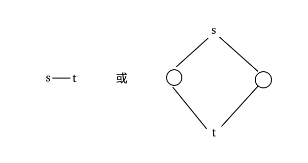

键入以搜索…
匹配算法：把输入按空格拆分，单独匹配每一段输入（不区分大小写，仅匹配文章文本内容），输出取或后的结果。
模糊搜索似乎很难搞，目前没有相关打算。
键入以搜索…
匹配算法：把输入按空格拆分，单独匹配每一段输入（不区分大小写，仅匹配文章文本内容），输出取或后的结果。
模糊搜索似乎很难搞，目前没有相关打算。
mst，怎么还有 mst related
https://www.luogu.com.cn/problem/CF723F
看起来形似最小度限制生成树，但没有边权导致失去了凸性，wqs 二分不再可行。
这也启示我们放弃 mst 算法，重新回到连通性看待本题。即尝试在不影响连通性的前提下，让 \(s,t\) 在原图上的度数减少到对应值。
发现 \(s,t\) 的决策会相互影响：

好消息是有且仅有这两种情况会干扰决策。胡乱贪心即可。
考虑忽略与 \(s,t\) 有关的边跑一遍 DFS，得到若干连通块，显然它们会分为只与 \(s,t\) 中一者有关 / 与二者都有关两类。
为什么是这个连边顺序呢，发现 \((s,t)\) 会用一条边消耗两次度数，故放在最后；其他两者先解决更严格的一者。故有。
#include <bits/stdc++.h>
int main() {
#ifdef ONLINE_JUDGE
std::ios::sync_with_stdio(false);
std::cin.tie(nullptr), std::cout.tie(nullptr);
#else
std::freopen(".in", "r", stdin);
std::freopen(".out", "w", stdout);
const auto stime = std::chrono::steady_clock::now();
#endif
int n, m;
std::cin >> n >> m;
std::vector<std::vector<int> > g(n + 1), ps(n + 1), pt(n + 1);
for (int x, y; m--; ) {
std::cin >> x >> y;
g[x].push_back(y), g[y].push_back(x);
}
int s, t, ds, dt;
std::cin >> s >> t >> ds >> dt;
std::vector<int> col(n + 1);
std::vector<std::pair<int, int> > res;
int now = 0;
std::function<void(int)> DFS = [&](int x) {
col[x] = now;
for (auto i : g[x])
if (i == s)
ps[now].push_back(x);
else if (i == t)
pt[now].push_back(x);
else if (!col[i])
res.emplace_back(x, i), DFS(i);
return;
};
for (int i = 1; i <= n; ++i)
if (i != s && i != t && !col[i])
++now, DFS(i);
for (int i = 1; i <= now; ++i)
if (!ps[i].empty() && !pt[i].empty());
else if (!ps[i].empty())
res.emplace_back(ps[i].back(), s), --ds;
else
res.emplace_back(pt[i].back(), t), --dt;
if (ds <= 0 || dt <= 0) {
std::cout << "No" << '\n';
return 0;
}
bool flag = false;
for (int i = 1; i <= now; ++i)
if (!ps[i].empty() && !pt[i].empty()) {
if (flag == false) {
res.emplace_back(ps[i].back(), s), --ds;
res.emplace_back(pt[i].back(), t), --dt;
flag = true;
}
else if (ds)
res.emplace_back(ps[i].back(), s), --ds;
else if (dt)
res.emplace_back(pt[i].back(), t), --dt;
else {
std::cout << "No" << '\n';
return 0;
}
}
if (flag == false)
for (auto i : g[s])
if (i == t) {
res.emplace_back(s, t);
--ds, --dt, flag = true;
}
if (flag == false) {
std::cout << "No" << '\n';
return 0;
}
assert((int)res.size() == n - 1);
std::cout << "Yes" << '\n';
for (auto [u, v] : res)
std::cout << u << ' ' << v << '\n';
#ifndef ONLINE_JUDGE
std::cerr << std::fixed << std::setprecision(6) << std::chrono::duration<double> (std::chrono::steady_clock::now() - stime).count() << "s\n";
#endif
return 0;
}https://www.luogu.com.cn/problem/CF1242B
发现实际上是在问删掉这 \(m\) 条边后还剩多少个连通块。
容易发现删的边相对来说比较少，或者说在 \(10^5\) 这个限制下很难分成很多个很大的连通块。
正解利用了鸽巢原理证明这个事情：相当于把 \(m\) 次删边分配给 \(n\) 个点，那么至少存在一个点，被删掉的边不超过 \(\left\lfloor \frac mn\right\rfloor\) 条。那么这个点带领的菊花形成了一个大小至少为 \(n-\left\lfloor \frac mn\right\rfloor\) 的连通子图。
剩余的 \(\left\lfloor \frac mn\right\rfloor\) 个点，目测不是很大，事实上又是神秘不等式：\(\left\lfloor \frac mn\right\rfloor^2<n\times \left\lfloor \frac mn\right\rfloor=m\)。可以暴力枚举点对查看是否有边。
对于菊花上可能的其他连边，仍然神秘不等式，\(\left\lfloor \frac mn\right\rfloor\times (n-\left\lfloor \frac mn\right\rfloor)=\left\lfloor \frac mn\right\rfloor\times n-\left\lfloor \frac mn\right\rfloor^2<\left\lfloor \frac mn\right\rfloor\times n=m\)，仍然暴力枚举即可。
#include <bits/stdc++.h>
int main() {
#ifdef ONLINE_JUDGE
std::ios::sync_with_stdio(false);
std::cin.tie(nullptr), std::cout.tie(nullptr);
#else
std::freopen(".in", "r", stdin);
std::freopen(".out", "w", stdout);
const auto stime = std::chrono::steady_clock::now();
#endif
int n, m;
std::cin >> n >> m;
std::vector<int> f(n + 1);
std::iota(f.begin() + 1, f.end(), 1);
std::function<int(int)> find = [&](int x) {
return x == f[x] ? x : f[x] = find(f[x]);
};
auto merge = [&](int x, int y) {
if (find(x) == find(y))
return false;
f[find(x)] = find(y);
return true;
};
std::vector<int> deg(n + 1, n - 1);
std::set<std::pair<int, int> > t;
for (int u, v; m--; ) {
std::cin >> u >> v;
t.emplace(std::min(u, v), std::max(u, v)), --deg[u], --deg[v];
}
int u = std::max_element(deg.begin() + 1, deg.end()) - deg.begin();
std::vector<int> p1, p2;
for (int i = 1; i <= n; ++i)
if (i == u || !t.count({ std::min(u, i), std::max(u, i) }))
p1.push_back(i), merge(u, i);
else
p2.push_back(i);
int cnt = 1 + (int)p2.size();
for (int i = 0; i < (int)p2.size(); ++i) {
for (int j = 0; j < i; ++j)
if (!t.count({ std::min(p2[i], p2[j]), std::max(p2[i], p2[j]) }))
cnt -= merge(p2[i], p2[j]);
for (int j = 0; j < (int)p1.size(); ++j)
if (!t.count({ std::min(p2[i], p1[j]), std::max(p2[i], p1[j]) }))
cnt -= merge(p2[i], p1[j]);
}
std::cout << cnt - 1 << '\n';
#ifndef ONLINE_JUDGE
std::cerr << std::fixed << std::setprecision(6) << std::chrono::duration<double> (std::chrono::steady_clock::now() - stime).count() << "s\n";
#endif
return 0;
}https://www.luogu.com.cn/problem/CF632F
神秘不等式。若边 \(A,B,C\) 组成三元环，显然有 \(A\le \max(A,B,C)\)。考虑 \(B\) 参与形成的另一个三元环 \(B,D,E\)，那么显然有 \(A\le \max(A,C,D,E)\)，（需要注意到此时仍是一个环，很容易证明），etc.
更可视化地叙述，令 \((x,y)\) 为边 \(A\) 的两端，则 \(A\) 参与构成的所有简单环，\(A\) 不大于环上边权最大值。反过来，若存在一个路径最大值小于 \(A\) 则判定失败。故 Kruskal 乱 check 一下即可，复杂度 \(O(n^2\log n)\)。
谁家好人写 \(O(n^2\log n^2)\) 的？咋看咋不对劲，好在发现问题，保住了高中生的名头。
#include <bits/stdc++.h>
int main() {
#ifdef ONLINE_JUDGE
std::ios::sync_with_stdio(false);
std::cin.tie(nullptr), std::cout.tie(nullptr);
#else
std::freopen(".in", "r", stdin);
std::freopen(".out", "w", stdout);
const auto stime = std::chrono::steady_clock::now();
#endif
int n;
std::cin >> n;
std::vector<std::vector<int> > a(n + 1, std::vector<int> (n + 1));
auto nosol = [&](void) {
std::cout << "NOT MAGIC\n";
exit(0);
return;
};
for (int i = 1; i <= n; ++i)
for (int j = 1; j <= n; ++j)
std::cin >> a[i][j];
std::vector<int> l(1);
for (int i = 1; i <= n; ++i) {
if (a[i][i] != 0)
nosol();
for (int j = 1; j < i; ++j) {
l.push_back(a[i][j]);
if (a[i][j] != a[j][i])
nosol();
}
}
std::sort(l.begin() + 1, l.end());
l.erase(std::unique(l.begin() + 1, l.end()), l.end());
int m = (int)l.size() - 1;
std::vector<std::vector<std::pair<int, int> > > e(m + 1);
for (int i = 1; i <= n; ++i)
for (int j = 1; j < i; ++j) {
a[i][j] = std::lower_bound(l.begin() + 1, l.end(), a[i][j]) - l.begin();
e[a[i][j]].emplace_back(i, j);
}
std::vector<int> f(n + 1);
std::iota(f.begin() + 1, f.end(), 1);
std::function<int(int)> find = [&](int x) {
return x == f[x] ? x : f[x] = find(f[x]);
};
for (int i = 1; i <= m; ++i) {
for (auto [u, v] : e[i])
if (find(u) == find(v))
nosol();
for (auto [u, v] : e[i])
if (find(u) != find(v))
f[find(u)] = find(v);
}
std::cout << "MAGIC\n";
#ifndef ONLINE_JUDGE
std::cerr << std::fixed << std::setprecision(6) << std::chrono::duration<double> (std::chrono::steady_clock::now() - stime).count() << "s\n";
#endif
return 0;
}